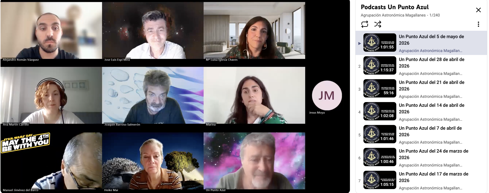

Alejandro Román
Home
About
Publications
AMIGA
ABANTI
Media
Media
Press coverage and media appearances
All
TV
Radio
Press
Video
Article
Podcast
Honorable Mention in the 5th Ezequiel Martínez Award for Young Researchers
Press
9 June 2026

Un Punto Azul Podcast
Podcast
5 May 2026
Canal Sur Radio - Interview on the program Cambio Climático
Radio
20 March 2026
Onda Cádiz - Interview on the program El Mirador
TV
11 March 2026
Canal Sur TV - 28F Global
TV
28 February 2026
Press Release - The Extent of Algae Turning Antarctic Snow Pink Is Greater Than Expected
Press
22 January 2026
YouTube - Science to Reduce the Environmental Impact of Sunscreens on Our Coasts
Video
28 October 2025
À Punt Radiotelevisió Valenciana - News Interview
TV
16 October 2025
Press Release - CSIC Study Highlights the Role of Drones in Assessing Infrastructure and Pollutants During the 2024 DANA Event
Press
15 October 2025
Canal Sur TV - Espacio Protegido: Recovery of Disused Salt Marshes, Key to Reducing Greenhouse Gases
TV
14 September 2025
El Confidencial - The Asian Alga Devastating Cádiz Reaches Cantabria
Press
26 August 2025
Onda Cádiz - Program El Mirador
TV
14 August 2025
Fulbright Spain - Interview with 2024 Predoctoral Fulbright Fellows
Video
24 September 2024
CSIC Investiga - Oceans: The Future of Marine Science Facing the Challenges of Global Change
Article
01 June 2024
BBVA OpenMind - Monitoring Antarctica from a Drone's-Eye View
Article
23 April 2024
RNE Program Españoles en la Mar - A New Georeferencing and Mosaicking Algorithm
Radio
23 February 2024
Press Release - CSIC Publishes the First Open Repository of Photogrammetric Data Captured by Drones in Antarctica
Press
23 February 2024
Fulbright Spain Blog - "Droning" on the Other Side of the Atlantic: A Once-in-a-Lifetime Fulbright Experience
Article
21 February 2024
Press Release - CSIC Develops Software to Study Aquatic Ecosystems
Press
22 January 2024
UMCES Website - Meet Visiting Fulbright Scholar Alejandro Román
Article
2 November 2023
Smithsonian Website - Remote (Controlled)
Article
21 September 2022
Canal Sur Radio - Interview on the program Canal Sur Mediodía Cádiz
Radio
03 June 2021